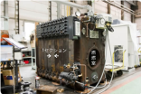

2026年
問題66 空気調和設備の温熱源に関する次の記述のうち，最も不適当なものはどれか．
(1)鋳鉄製ボイラは，鋳鉄製のセクション内部の清掃が難しい．
(2)炉筒煙管ボイラは，洗浄・消毒等の用途に高圧蒸気を必要とする病院・ホテル等で多く採用されている．
(3)小型貫流ボイラは，蒸気を熱媒としている．
(4)真空式温水発生機は，高温水を熱媒としている．
(5)水管ボイラは，蒸気を熱媒としている．
2026年
問題66 正解（4） 頻出度AAA
真空式温水発生機（真空式温水器）は，低温水を熱媒としている（2026-66-1表参照）．
2023-66-1表 ボイラの種類
| ボイラの種類 | ボイラより取り出す熱媒の種類 | 蒸気圧力または温水温度 | 蒸発量または熱出力 | ボイラ効率[%] | 主な用途 | |
| 鋳鉄製ボイラ | 蒸気 | 0.1MPa以下 | 0.3〜4t/h | 80〜86 | 給湯・暖房用 | |
| 低温水 | 120℃以下 | 29〜2300kW | ||||
| 丸ボイラ | 立てボイラ | 蒸気 | 0.7MPa以下 | 0.1〜0.5t/h | 70〜75 | 暖房・プロセス用 |
| 炉筒煙管ボイラ | 蒸気 | 1.6MPa以下 | 0.5〜30t/h | 85〜92 | 給湯・暖房・プロセス用 | |
| 中・高温水 | 170℃以下 | 350〜9300kW | 地域暖房用 | |||
| 貫流ボイラ | 単管式小型貫流ボイラ | 蒸気 | 3MPa以下 | 0.1〜2t/h | 80〜95 | 暖房・プロセス用 |
| 多管式小型貫流ボイラ | 蒸気 | 1MPa以下 | 0.1〜2.5t/h | 75〜95 | 暖房・プロセス用 | |
| 大型貫流ボイラ | 蒸気 | 5MPa以上 | 100t/h以上 | 92 | 発電用 | |
| 高温水 | 130℃以下 | 5.8MW 以上 | 地域暖房用 | |||
| 水管ボイラ | 立て水管ボイラ | 蒸気 | 1MPa以下 | 0.5〜2t/h | 85〜92 | 給湯・暖房・プロセス用 |
| 二胴水管ボイラ（自然循環ボイラ） | 蒸気 | 0.7MPa以上 | 5t/h以上 | 85〜90 | 暖房・プロセス・発電用 | |
| 放射型ボイラ | 蒸気 | 12MPa以上 | 100t/h以上 | 92 | 発電用・事業用 | |
| 電気ボイラ | 温水 | 120℃以下 | 120〜930kW | 98 | 全電気式空調補助熱源用 | |
| 熱媒ボイラ | 気相 | 200〜350℃ | 1.2〜2300kW | 80〜85 | プロセス用 | |
| 液相 | ||||||
| 真空式温水器 | 鋳鉄製 | 低温水 | 80℃以下 | 120〜3000kW | 85〜90 | 給湯・暖房用 |
| 炉筒煙管式 | 低温水 | 80℃以下 | 46〜1860kW | 85〜88 | ||
| 住宅用小型温水ボイラ | 温水 | 0.1MPa以下 | 12〜41kW | 60〜80 | 給湯・暖房用 | |
出典 公益社団法人 日本建築衛生管理教育センター
「新建築物の環境衛生管理第2版第1刷」中巻213頁 表5-2-1(10)
真空式温水発生機（2026-66-1図）は減圧蒸気室で蒸気の潜熱を熱交換に利用している．
破裂などの重大な危険性がない真空式温水発生機ならびに無圧式温水発生機は，労働安全衛生法の特定機械に該当せず，運転に特別な資格を要さない．
2026-66-1図 真空式温水発生機
-(1) 鋳鉄製ボイラは，鋳鉄製のセクションを何台か組み合わせ，外部からボルトで締め付けた構造で（2026-66-2図），セクショナルボイラとも呼ばれる．分割搬入が可能で長寿命であるが，鋳鉄という材料の制約上，高温・高圧・大容量のものは製作できない．
また，構造上セクションの内部（缶水・蒸気部）の清掃が難しく，スケール付着防止のため復水・還水を利用した閉回路として設計・使用する．
2026-66-2図 鋳鉄製ボイラ（セクショナルボイラ）

出典 株式会社前田鉄工所
https://www.maedatekkou.co.jp/vision/challenge/ を基に作成